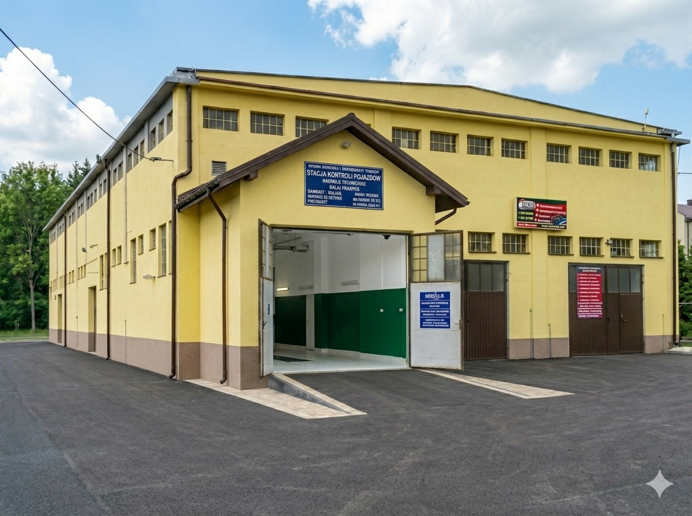
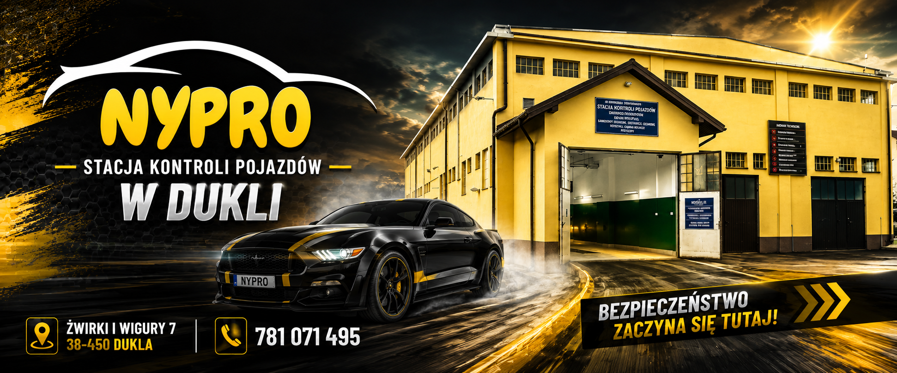
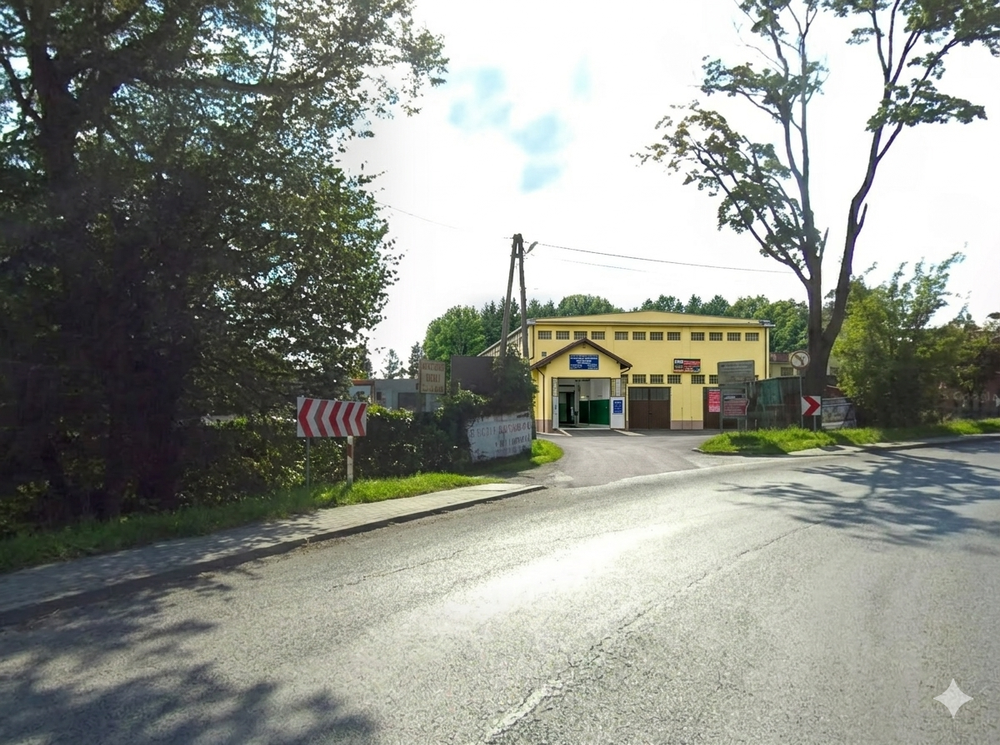
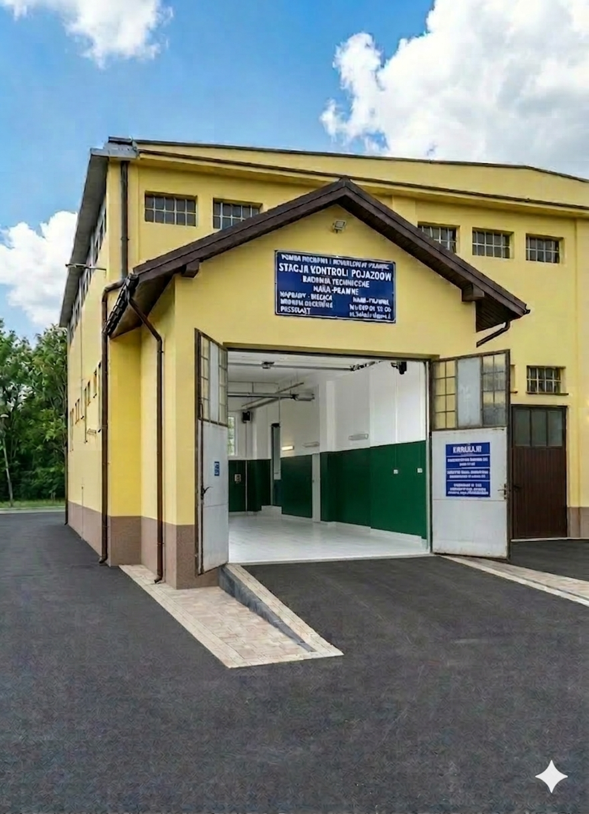

Fast service
We focus on efficient inspection workflow and clear information for the driver.
Since 01.01.1998 • vehicle inspections in Dukla
Fast and professional vehicle inspections in Dukla with no unnecessary waiting. We are located by the main road, offer a large parking area and accept both card and cash payments.
If you need a technical inspection, car inspection or vehicle inspection station in Dukla, visit NYPRO at Żwirki i Wigury 7. We serve local drivers and international drivers travelling through the region.
International
Dukla is located near an important route and the border area. That is why the NYPRO website is available in Polish, English, Slovak and Ukrainian.
Google profile
Check NYPRO Vehicle Inspection Station reviews on Google or leave your own rating after your technical inspection.
See Google reviewsWe focus on efficient inspection workflow and clear information for the driver.
The station is located by the main road in Dukla, with a large parking area on site.
Many years of practical experience in technical inspections for vehicles up to 3.5 t.
Checklist
Local SEO
We welcome drivers from Dukla, Tylawa, Jaśliska, Iwla, Lipowica, Równe, Barwinek, Zboiska, Miejsce Piastowe, Krosno and the surrounding area.
FAQ
Yes. We accept card and cash payments.
Yes. We inspect vehicles up to 3.5 t equipped with LPG installation.
You can call in advance and ask about current availability. We focus on fast service with no unnecessary queues.
Yes. We perform tow hook inspections required for registration entry.
Current offers and promotions are published on the NYPRO Facebook profile.
Services
Periodic technical inspections for passenger and light commercial vehicles up to 3.5 t.
Technical inspections for vehicles up to 3.5 t equipped with LPG installation.
First technical inspections for vehicles imported from abroad.
Technical inspections for agricultural tractors up to 3.5 t.
Inspections for mopeds up to 50 cc and motorcycles over 50 cc.
Technical inspection of tow hooks and additional verification for registration entry.
Technical inspections after an accident or road collision.
Technical inspections for quads and microcars.

NYPRO Dukla
The station has operated since 1998. We serve drivers from Dukla and the surrounding area, as well as people travelling toward the border.
Prices
Fees are based on Journal of Laws 2025 item 1223. The final fee depends on the vehicle type and inspection scope.
NYPRO
Reminder
For customer convenience, after each technical inspection we send a reminder about the next inspection date. This helps you avoid missing the validity date of your inspection.
On the Facebook profile of NYPRO Vehicle Inspection Station in Dukla we publish current information, promotions and notices for drivers. Click and see what is available now.
Gallery



NYPRO
We carry out the inspection efficiently, without unnecessary delays.
Easy access in Dukla, convenient entry and a large parking area.
Over 27 years of experience in technical inspections and driver service.
After the inspection, we send a reminder about the next due date.
Choose the payment method that is most convenient for you.
Information is available in Polish, English, Slovak and Ukrainian.
If you are satisfied with the service, scan the code with your phone and leave a review. Reviews help other drivers find a reliable vehicle inspection station in Dukla.
Open Google reviewsPL • EN • SK • UA
Dukla is located on routes important for local and international traffic. That is why NYPRO provides a multilingual website, clear directions, an international phone number and useful information for drivers travelling through the region.
SEO
Each key service has its own SEO page, helping Google match the website to specific driver searches.
Blog
Practical guides for drivers: fees, documents, LPG, imported vehicles, tow hooks and preparing your car for inspection.
Call and ask about availability. NYPRO Dukla — Żwirki i Wigury 7.
Call: +48 781 071 495Directions
By the main road, with easy access and a large parking area.
Get directionsContact
ul. Żwirki i Wigury 7, 38-450 Dukla
NIP: 6842055039
Opening hours:
Monday–Friday: 8:00–16:00
Saturday: 8:00–13:00
Sunday: closed